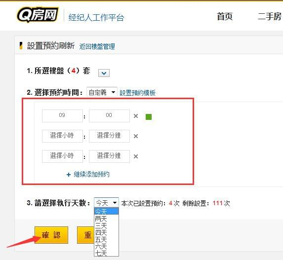
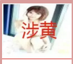

>>如何开通Q房网
温馨提示：此攻略适用于端口城市，如北京、上海、广州、南京、苏州等42个城市。1、打开网站：http://www.qfang.com
2、选择你所在的城市，如【北京】，然后点击有上角“经纪人登陆”。
>>如何发布房源？
端口城市：北京、上海、广州、南京、苏州等。1、选择所在城市，进入登录界面。然后登录经纪人后台。

2、首页位置，即可选择发布房源类型。点击“发布二手房”或“发布租房”。直接进入房源发布页面。
3、或者从导航中“二手房”“租房”栏，进入房源信息发布！
>>如何批量预约刷新？
端口版：北京、上海、广州、南京、苏州等。1、登录经纪人后台。
2、点击“二手房”进入房源页面，勾选自己要刷新的在线房源，点击“刷新”或 “批量预约”。
3、选择批量预约之后，进入设置页面。可以进行【预约时间】和【预约天数】来设置房源自动刷新。点击“确认”即可。
>>如何申请小区置业专家？
端口城市：北京、上海、广州、南京、苏州等1、选择城市，登录经纪人后台。
2、首页位置下翻，即可看到【小区专家】，点击“立即申请”。
3、或者点击个人中心——>进入小区专家。勾选要申请的小区置业专家位置，点击提交。
4、每个经纪人最多可申请3个小区的专家，展示15天。每个月1日、16日系统自动审核。
>>端口有哪些版本，怎么升级高版本？
温馨提示：此攻略适用于端口城市，如北京、上海、广州、南京、苏州等42个城市。 Q房网经纪人端口，助力行业，免费开放！所有版本均可免费使用！ 版本主要有四种：60版、120版、180版、300版。可以通过积分升降级！1、关注个人积分升级，及时有效使用高版本！
2、具体版本功能、积分规则 请戳↓↓↓

>>如何使用群发工具？
温馨提示：此攻略适用于端口城市，如北京、上海、广州、南京、苏州等42个城市。1、登录经纪人后台。
2、 进入端口，选择二手房，勾选要导入到房探的房源。选择批量导入到房探007.如图示： 请戳↓↓↓
3、登录经纪人后台，点击“房源群发”。直接在房探007—>“二手房源管理”—>选择需要发的房源—>点击 “发布房源”。
4、勾选已绑定的网站，点击“一键群发”即可直接同步到其他房产网站。
4、未绑定其他网站的，可以进入“房源群发”—>“群发端口设置”。绑定已经注册过的房产网站，一次发房，同步上线。
>>如何使用群发工具？
温馨提示：此攻略适用于端口城市，如北京、上海、广州、南京、苏州等42个城市。注册使用经纪人端口还可以参加更多精彩活动！师傅带你飞，现金大奖领不停~ 师傅资格： NO.1注册使用Q房网 NO.2已经获得认证
NO.3在线房源满40套
奖励机制：师傅每成功邀请一位徒弟（经纪人）注册Q房网，且在线房源10套以上（含10套），奖励10元现金，不设封顶。
如何邀请：登陆经纪人后台——>领取邀请码，通过微信扫描二维码，或复制链接分享进行邀请。
封神大奖：活动截止，每城市累计奖金数排名前3名，赢取师傅封神榜大奖，获取奖金数需100元以上（含100元）。
温馨提示：本次活动最终解释权归深圳市云房网络科技有限公司。~
1、登录经纪人后台。
2、发布40套房源，成为师傅！（满足该条件的，请直接绕路到第三步。）
3、恭喜你升级成为师傅！赶紧分享二维码，或者分享链接，邀请徒弟，一起赢取丰厚大奖吧~
温馨提示：在首页左上角页可以直接看到收徒状态哦~收徒越多，奖励越多，上不封顶！

>>房产经纪人如何提高房源点击量
1.选择合理刷新时段，让自身房源充分曝光
作为经纪人都知晓，想让房源得到充分的曝光，得到客户足够的点击量，刷新重要，选择合理的时间段刷新，显得至关只要。经网站数据统计：“10：00-12：00”，“14:00-16:00”，“20:00-21:00”，这几个时间段网民浏览率最高，可勤刷新。做豪宅经纪人可集中在晚上9点后勤刷新。
2.充分认识发布房源标题的作用
上面讲到在合理的时间进行刷新，让更多的客户看到你的房源。如何让客户看到众多房源从而放弃其他，选择你的房源，这里房源标题至关重要，好的房源标题能迅速吸引客户的眼球。总结如下①：深入了解该房源，言简意赅，突出卖点； ②：多考虑客户最关心的性价比、地段、周边配套、升值潜力等因素，突出价格优惠性价比，吸引网民；③：适当考虑用一些广告性的语言，但要求贴近真实，无虚假；④：多用数字和数据，数字数据容易吸引人注意；切忌标题过度浮夸不实，发布不服规则的标题。
3.专业详细的房源描述
当客户找到满意的房源信息点击进去之后，首先希望看到的是一个详细具体的房源描述，希望对于该房源的价格、周边环境以及室内设施或者其特色有一个详细的了解，另外对于中介公司或者经纪人的实力也会做一定的考量，那么除了做好房源或者小区的特色介绍之外还可以做出一些承诺或者保证体现经纪人或中介公司的实力和服务态度。一个好的房源描述要能够扬长避短，突出重点，从客户的角度出发充分考虑其需求然后在追求整洁美观的基础之上突出亮点。
4. 发布性价比高的房源，避免冷门楼盘
客户要的就是物美价廉，物超所值。人们日常所说的地段好一点，价格适中/便宜一点，房型、朝向、小区环境好一点，房价也不太贵的，往往这种房源对客户的吸引力就越大。发布过程中尽量避免冷门楼盘，否则前面的一切做的再好，也取得不了意向效果！
5. 上传房型图、小区环境、室内外实景等相关照片
客户上网找房子，注重的就是网络的高效性。足不出户就可以了解小区和房屋内的情况，客户对你也会有所信任。因此，我们上传的每一张照片都应站在客户的角度换位思考。想客户之所想，只有了解客户的心理，读懂客户的需求，才能让彼此尽快的额“发生关系”。
6.建立良好的品牌形象
个人品牌形象至关重要，上传自信、亲切、微笑、职业的个人照片，一张面带笑容、身着正装、画面清晰的照片不仅是专业的一种体现，且能拉近与客户的距离。
>>如何下载经纪人端口？
温馨提示：此攻略适用于端口城市，如北京、上海、广州、南京、苏州等42个城市。经纪人端口让你房源管理更快捷方便~
最快捷的下载方式共有3种！
1、可直接在手机应用里面搜索“经纪人端口”，即可下载。
2、经纪人端口（端口版）二维码，直接下载。
>>查看业主委托需要满足什么样的条件？
温馨提示：此攻略适用于端口城市，如北京、上海、广州、南京、苏州等42个城市。1、登录经纪人后台 往下翻 ↓↓↓
2、 2、申请条件:
A、在Q房网上架40套房源，即可享有查看权限。
B、同时需满足所在服务片区有业主委托的房源。
C、每天每人可查看2条委托。.如图示： 请戳↓↓↓
3、满足申请条件后可以看到业主委托信息，根据自己的需求，去抢！
4、抢到委托后，可以立即获取业主信息和房源信息，即刻上架房源，轻松补充房源量。
温馨提示：还可以通过“个人中心”——>进入“业主委托”快速抢占房源！
>>如果在端口使用方面遇到问题，怎么办？
温馨提示：此攻略适用于端口城市，如北京、上海、广州、南京、苏州等42个城市。1、关注微信公众号：Q房网端口。直接回复遇到的问题，机器人快捷回复答疑！ 微信号：qfangdk88（Q房端口88 拼音） 或扫描二维码。
2、直接咨询客服热线：4008-556-550 客服热线位置↓↓↓

>>如何免费领取标签和参与抢曝光？
温馨提示：此攻略适用于端口城市，如北京、上海、广州、南京、苏州等42个城市。1、免费领标签
八大功能之签到标签，“学区”“南北通透”“免税”3大特色标签，免费领取足够任性！给你一个标签，让你轻松牵动客户。
登录经纪人后台，点击 签到领标签↓↓↓
每天签到，每天可领取一次还有签到帮助，教你轻松使用。 标签可存储、保留，每次使用可保持7天，有优势房源还可一次性使用3个标签。让你的房源信息更显眼！

2、抢曝光 八大优势功能之抢曝光，免费上头条，绝佳 “露脸”时机，轻松打破“汪式”诅咒！必须疯抢！ 每天中午12:00准时开抢，每人每天仅有一次机会。 抢到之后，当天推荐二手房才有效！
>>使用经纪人端口的各项数据与电脑是同步的的吗？
温馨提示：此攻略适用于端口城市，如北京、上海、广州、南京、苏州等42个城市。经纪人端口是为了方便经纪人使用而开发的手机端APP。所有数据是和电脑PC端数据同步实现。
经纪人端口主要由以下功能： 1、房源发布，房源管理。
2、抢曝光。
3、客户管理。
4、Q聊。
首页功能展示↓↓↓
>>为什么端口积分达到200分，端口版本还没有升级？
温馨提示：此攻略适用于端口城市，如北京、上海、广州、南京、苏州等42个城市。1、积分升级是系统自动升级，一个月可以升级一次。 举个例子：如果5月20日开始积分，那么就是5月20日——6月20日为一个整月。在积分达到升级要求之后，6月20才会升级。
2、积分升级只能逐级上升，不可越级。60版—120版—180版—300版。 举个例子：如果当期是60版那么积分如果满足180版本的分数，也只能升级到120版。
3、具体的版本积分和升级天数提醒在经纪人后台首页。
4、具体升降级规则。
>>关于广告法限制和相关敏感词的限制内容？
2015年新广告法的正式实施，在各行各业都掀起了轩然大波。那么，这部最新的广告法与房产经纪人有关系吗？“品质好到违反广告法！户型帅到没朋友！配套好到不敢说！”诸如此类的段子瞬间刷爆了朋友圈。究其原因还是新广告法落地，做房地产的，很容易一不小心就违法了！

Q房网端口的房源发布审核功能，就在这样的背景下应运而生！为帮助广大经纪人朋友更好地了解并使用此项功能，请认真详细地阅读以下说明：
1 房源为什么要进行审核？ 归根结底，房源审核的最终受益者是房产经纪人。因为经过审核的房源无论是标题还是图片都会更加规范，有助于提高网站房源的整体质量。更重要的是，真实的图片、规范的描述，能够让客户获得最佳的找房体验。如此一来，点击量、电话量、上户量都会有节节攀升。
2 房源审核的流程是什么？ 经纪人上架房源→后台审核→通过即上架，在网站展示/未通过则直接下架，修改后再重新提交
3 房源审核的流程是什么？ 一般情况下，工作日（周一~周五）房源审核在半小时内响应完毕，周末则在1小时内响应完毕。特别说明：若遇到房源数量过多的情况，响应时间会有所延长，原则上所有房源都会在当天全部审核完成。审核中的房源，不能刷新和预约刷新。
4 主要审核房源哪些方面？ 【审核图片】 审核不通过的情况包括但不限于以下几种：
黄赌毒、反动等国家严令禁止传播的违法内容，一经发现，直接删除。
过于模糊，根本无法看清图片内容
水印、LOGO过大或者居中，直接影响美观
【审核敏感词】 1、黄赌毒、反动、犯罪等国家明令禁止使用的词汇 办理票据，国家软弱，还看锦涛，考试包过，老虎机等。 举例说明： 好的房子就像性感美女，不是用来欣赏的，是用来享受的！！！
2、2015年新广告法提出9项违禁极限用语 举例说明： 史上最超值的二手房，看了你就知道！→→与“最”有关 5万买一个大厂数一数二的学区房， 还等什么？？？
以下违禁极限用语绝对不能用！！
与“最”有关 最、最佳、最具、最爱、最赚、最优、最优秀、最好、最大、最大程度、最高、最高级、最高端、最奢侈、最低、最低级、最低价、最底、最便宜、史上最低价、最流行、最受欢迎、最时尚、最聚拢、最符合、最舒适、最先、最先进、最先进科学、最先进加工工艺、最先享受、最后、最后一波、最新、最新技术、最新科学。 与“一”有关
中国第一、全网第一、销量第一、排名第一、唯一、第一品牌、NO.1、TOP.1、独一无二、全国第一、一流、一天、仅此一次、最后一波、全国X大品牌之一。
与“级/极”有关
国家级、国家级产品、全球级、宇宙级、世界级、顶级（顶尖/尖端）、顶级工艺、顶级享受、高级、极品、极佳（绝佳/绝对）、终极、极致。 与“首/家/国”有关
首个、首选、独家、独家配方、首发、全网首发、全国首发、首家、全网首家、全国首家、XX网独家、XX网首发、首次、首款、全国销量冠军、国家级产品、国家（国家免检）、国家领导人、填补国内空白、中国驰名（驰名商标）、国际品质。 与“品牌”有关
大牌、金牌、名牌、王牌、领袖品牌、世界领先、（遥遥）领先、领导者、缔造者、创领品牌、领先上市、巨星、著名、掌门人、至尊、巅峰、奢侈、优秀、资深、领袖、之王、王者、冠军。
与“虚假”有关
史无前例、前无古人、永久、万能、祖传、特效、无敌、纯天然、100%、高档、正品、真皮、超赚、精确。
与“权威”有关
老字号、中国驰名商标、特供、专供、专家推荐、质量免检、无需国家质量检测、免抽检、国家XX领导人推荐、国家XX机关推荐、使用人民币图样（央行批准除外）。
与“欺诈”有关
涉嫌欺诈消费者：点击领奖、恭喜获奖、全民免单、点击有惊喜、点击获取、点击转身、点击试穿、点击翻转、领取奖品。 涉嫌有诱导消费者：秒杀、抢爆、再不抢就没了、不会再便宜了、没有他就XX、错过就没机会了、万人疯抢、全民疯抢/抢购、卖/抢疯了。 与“时间”有关
现实必须具体时间：今日、今天、几天几夜、倒计时、趁现在、就、仅限、周末、周年庆、特惠趴、购物大趴、闪购、品牌团、精品团、单品团（必须有活动日期）。
严禁使用：随时结束、随时涨价、马上降价。